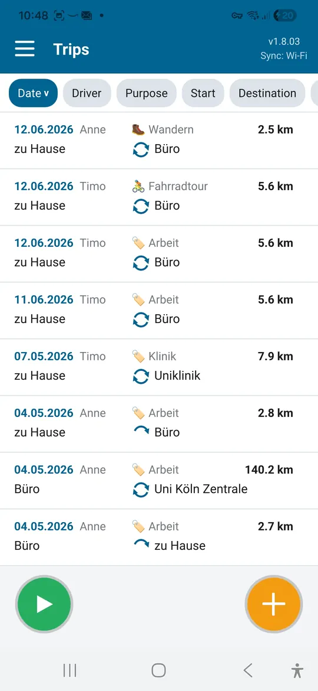
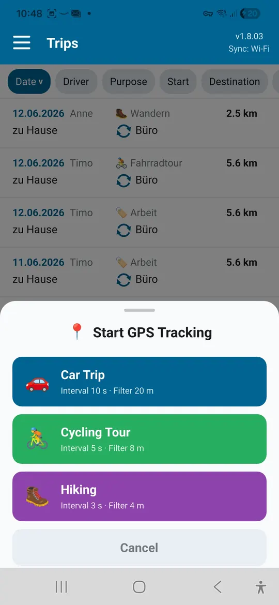
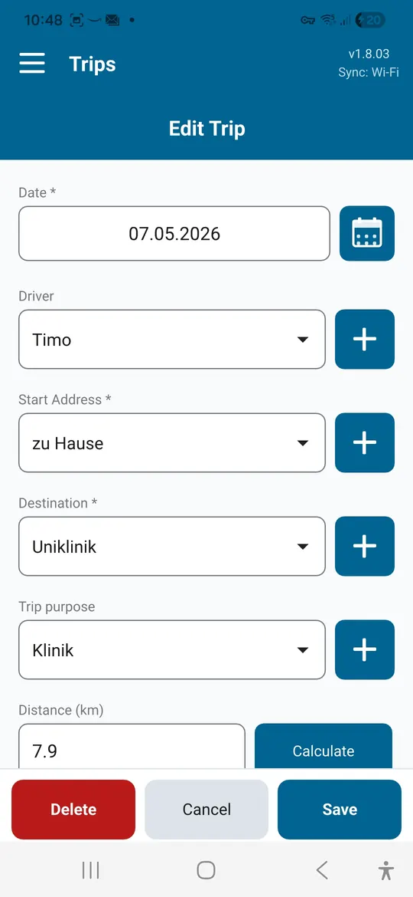
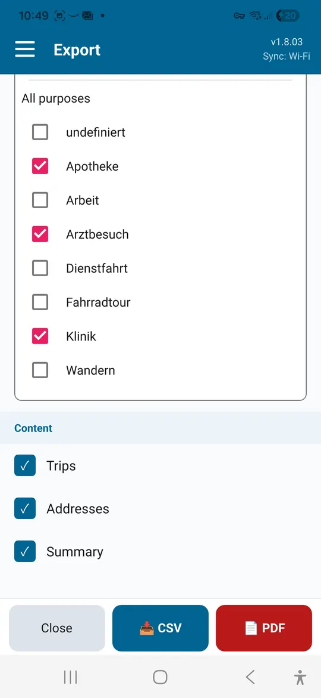
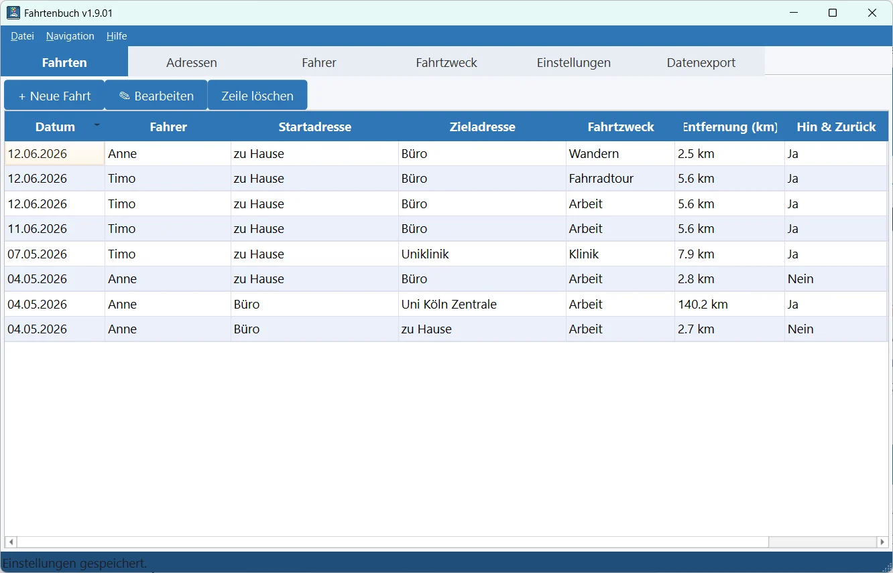
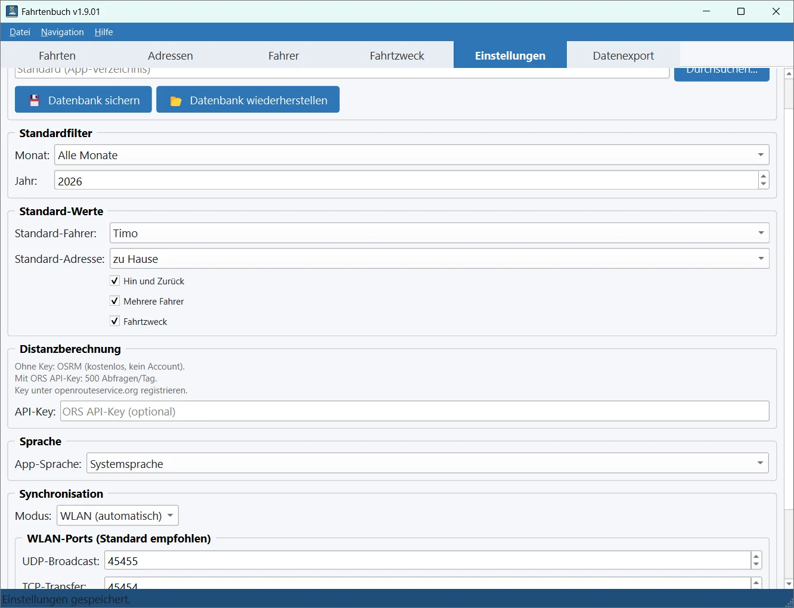

Freelancers and small businesses
Record client visits and business trips with purpose and distance. The monthly overview is a solid basis for invoicing and taxes.
Mileage log app for Android and Windows
Driver's Log records trips with date, driver, purpose, start and destination, and calculates the distance for you. For business trips, medical appointments and leisure tours, with export to PDF or CSV.
| Date | Driver | Purpose | Start → Destination | km |
|---|---|---|---|---|
| Oct 6 | Anne | Client visit | Office → Weber Ltd. | 38.4 |
| Oct 9 | Tim | Doctor | Home → Dr. Klein's practice | 12.6 |
| Oct 12 | Anne | Bike ride | Riverside → Old Town | 24.1 |
| Total | 75.1 |

A logbook helps wherever trips need to be proven, reimbursed or simply kept on record.
Record client visits and business trips with purpose and distance. The monthly overview is a solid basis for invoicing and taxes.
Collect trips to doctors, clinics and therapy sessions as evidence for your tax return or a reimbursement claim.
Document trips for your club, volunteer work or caring for relatives and claim them in one go.
Record the ride by GPS, name start and finish and keep the distance on file.
Capture the distance you walked by GPS, even with the phone in your pocket.
A note on taxes: Tax authorities often set strict formal requirements for logbooks, for example for company cars. If in doubt, check with your tax adviser whether your records are sufficient.
Everything a logbook needs, without the paperwork.
Store start and destination addresses in the address book and pick them with a single tap. Suggestions come from OpenStreetMap.
The distance between start and destination is calculated by route, for the outward trip, the return trip or both.
For car trips, bike rides or hikes. Recording continues in the background and then fills in the trip form.
Assign each trip to a person, for example when a family or team shares a car.
Client visit, doctor, shopping: create your own purposes and sort the list by them.
By month or full year and by purpose, with trip list, summary by route and address list.
Daily backup to a folder of your choice. It is kept even if the app is uninstalled.
English, German, French, Dutch and Spanish.
Wi-Fi sync · Pro
Your Android device and your Windows PC sync trips directly over your Wi-Fi. A trip saved on one device shows up on the others moments later.





Screens show sample data.
Driver's Log is free. A one-time in-app purchase unlocks Pro. No subscription.
| Feature | Free | Pro |
|---|---|---|
| Trips | up to 25 | unlimited |
| GPS recording | ✓ | ✓ |
| Export to PDF and CSV | ✓ | ✓ |
| Multiple drivers and custom purposes | ✓ | ✓ |
| Automatic backup | ✓ | ✓ |
| Wi-Fi sync between devices | – | ✓ |
| Windows app with sync | – | ✓ |
Google Play shows the current price in your currency.
The Windows app is free. Syncing with your phone requires Pro in the Android app.
Download forWindowsOnly on your own devices, in a local database. There is no user account and no cloud storage.
Only for address suggestions and automatic distance calculation. Logging trips and Wi-Fi sync also work offline.
All your existing trips are kept. New trips can then be added with Pro.
The export is a good basis for tax returns and reimbursement. Whether it is sufficient in your case depends on your situation and local rules.